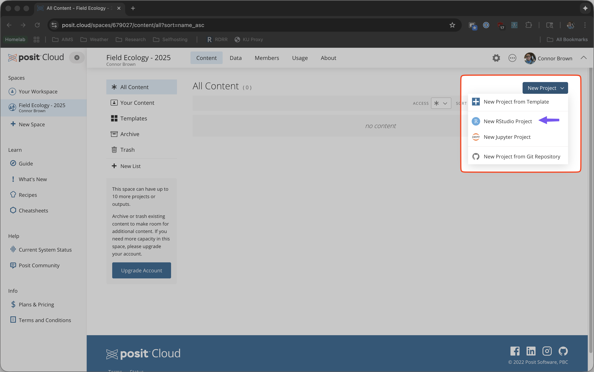
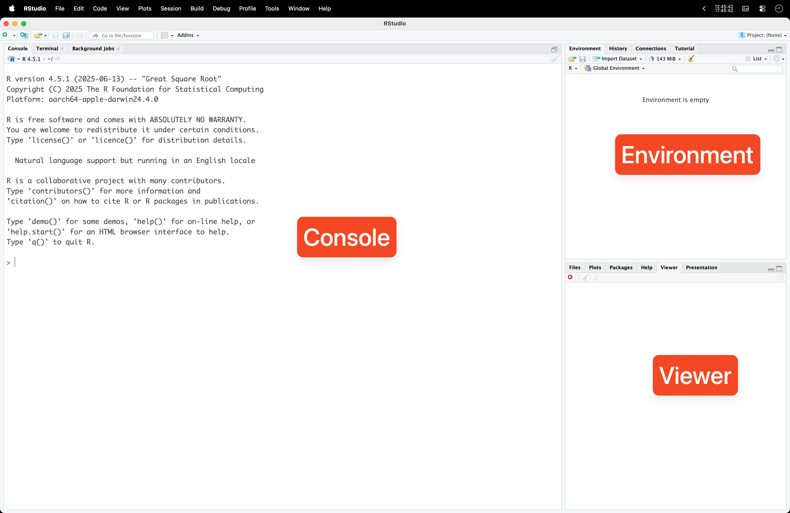
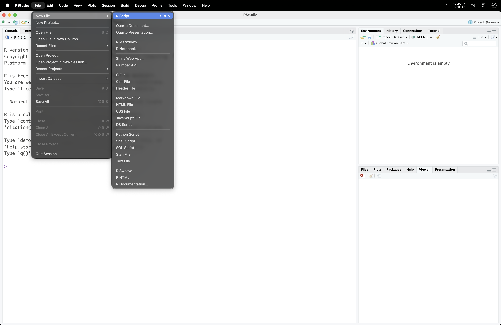
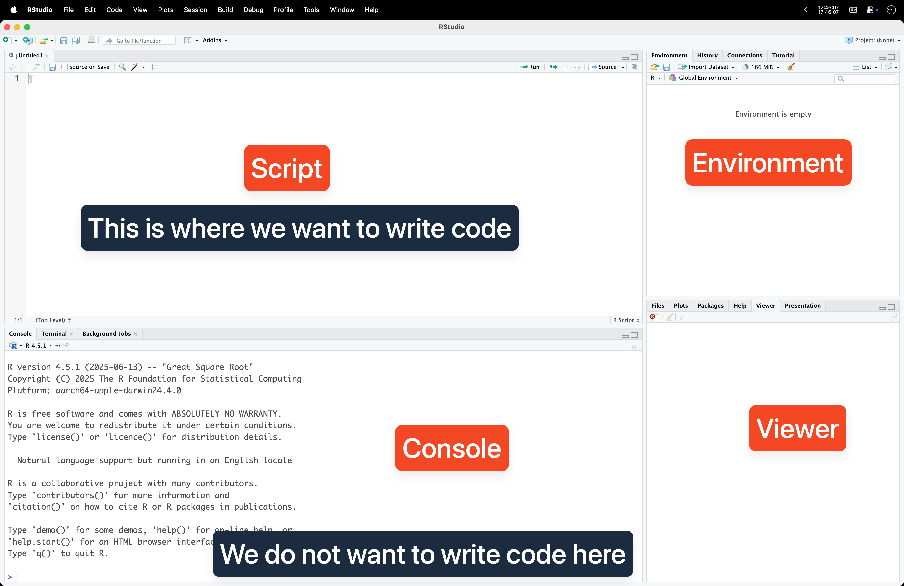
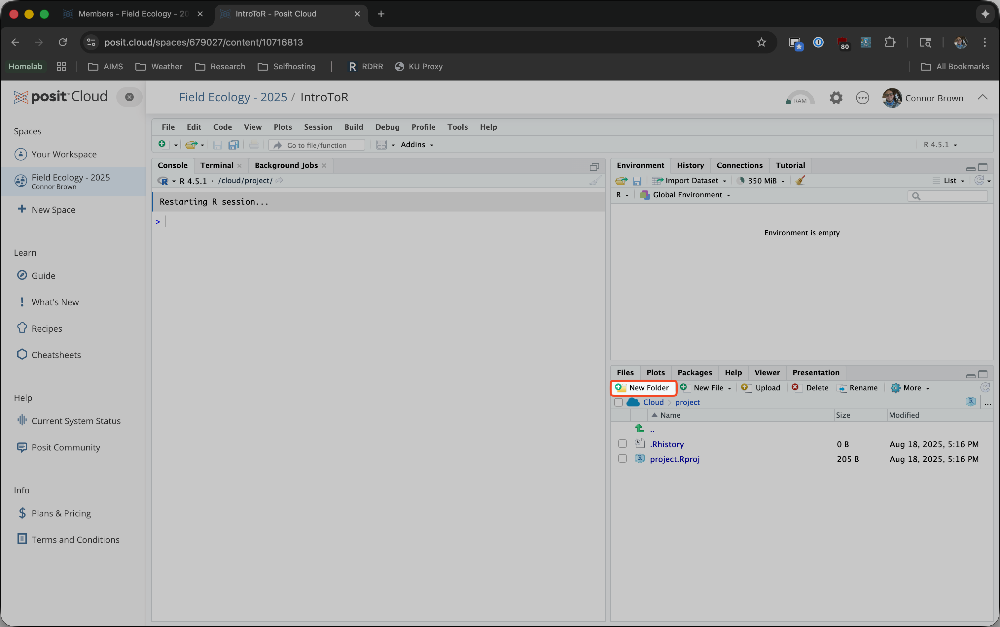
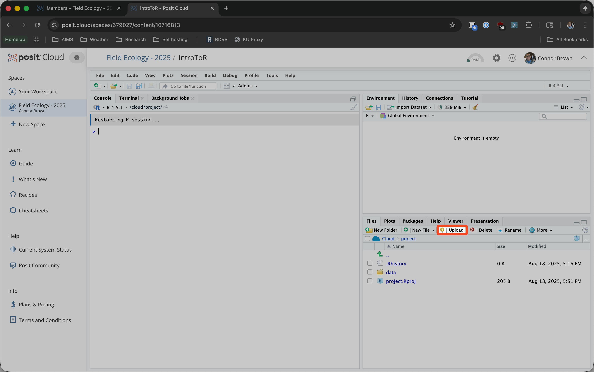
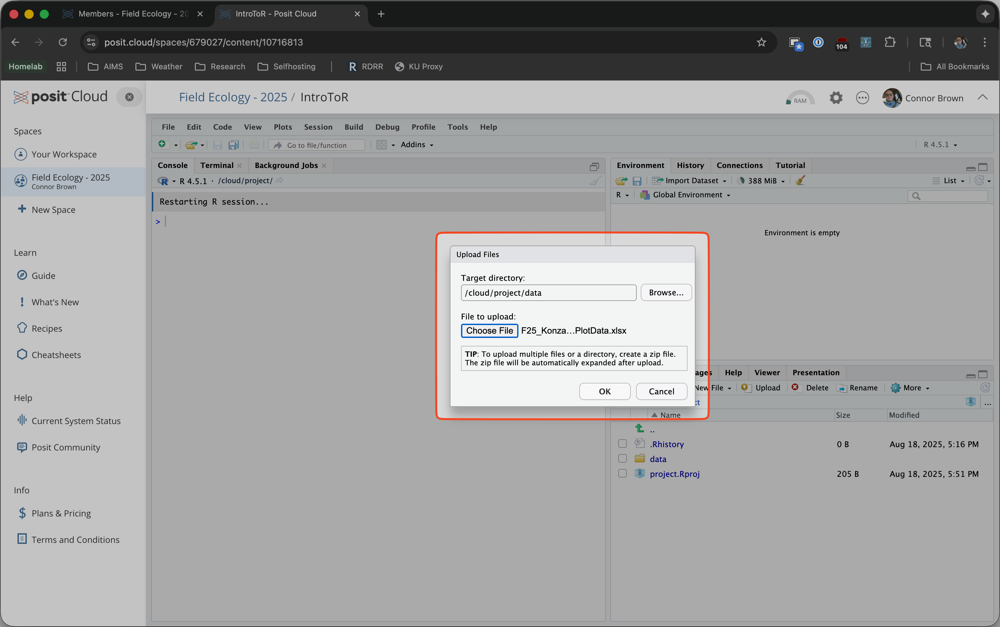
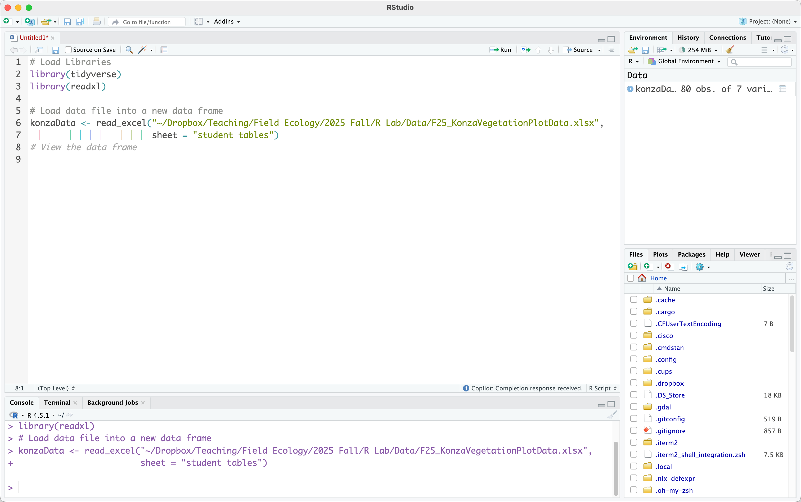
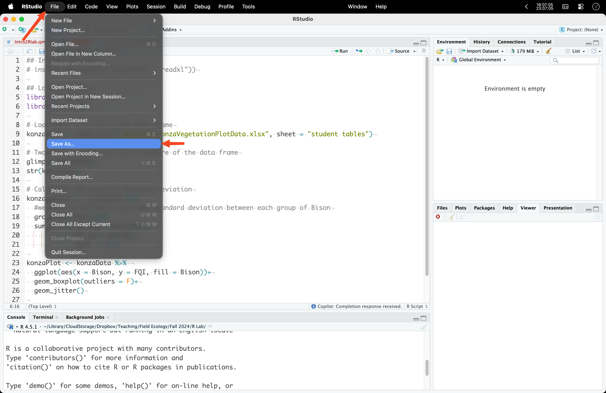

Intro to R
Intro to R, Installing R and RStudio
What is R?
R is an open-source software environment for statistical computing and graphics, popular among ecologist and data scientist. Open source software is free, and anyone can use and modify it. This facilitates collaboration, leading to the continuous expansion of R’s functionality. There’s almost nothing you can’t do in R! Beyond statistical analysis, you can write books, create interactive web apps and animations, design graphics, and even use R for geographic information systems (GIS). Since R does not have a graphical user interface (GUI) for point-and-click interactions like Excel or SPSS, most people use an Integrated Development Environment (IDE) called RStudio. RStudio provides a consistent way to organize files, access information quickly, and display data.
R in your Browser - Posit Cloud
Log in with your Google account or sign up for a new posit account
Create a workspace for Field Ecology
Create a new RStudio Project - Name the project something like Intro to R

R on Your Computer
You can download R here (CRAN).
For Macs (2020-Now), choose Download R for macOS and download the R-4.5.1-arm64.pkg
For Macs (Pre-2020), choose Download R for R-4.5.1-x86_64.pkg
For Windows, chose Download R for Windows and click R-4.5.1-win.exe.
Follow the instructions as you would with any other program. Accept all default settings.
Download and Install RStudio
RStudio is the program that we will use to run R. RStudio is a separate piece of software that makes R easier to use and is a convenient way to be able to see your files, your data, your code, and your plots all together. RStudio can be downloaded here: (RStudio Desktop - Posit). Scroll down the page to choose the RStudio Desktop version that is appropriate for your operating system. Again, follow the installation procedure and accept the default settings.
Open RStudio
When you open RStudio for the first time, be sure to choose the 64-bit version of R in the “Choose R Installation” options pop-up. For the “R crash reports” pop-up, you can either choose to upload R crash reports automatically or not. Your choice. Your initial RStudio window will have the console to the left and Environment and Viewer to the right.

Before you start writing code, you need to open an R Script file, this is where you’ll be able to save code for later.
- File -> New File -> R Script (Shortcut: ⌘⇧N for Mac and Ctrl⇧N for Windows)

After opening a new R Script, you should see something like the screenshot below.

Source/Script panel: This is where you input and run your code. Your graphics display below the chunk of code inside the panel.
Console panel: The Console is where the output and conflicts and errors within your code are listed. You can also run individual lines of code in the Console if you want to test code variations or options before incorporating into your script and running the entire chunk.
Environment panel: The Environment displays your current R objects, variable values, custom functions, and previously executed commands in the “History” tab.
Viewer panel: The Viewer panel displays plots, files, the library of R packages that are installed, and R Help resources.
Install Packages
In R, packages are collections of functions, data, and documentation bundled together to extend the capabilities of R. They allow users to perform specific tasks, such as data manipulation, visualization, statistical modeling, and more. R comes with a set of base packages, but thousands of additional packages are available through repositories like CRAN and GitHub. Popular packages include dplyr for data wrangling, ggplot2 for data visualization, and caret for machine learning. Installing a package is done using the install.packages() function, and loading it into your session is done with library().
To install a package navigate to Tools > Install Packages … and type the packages you want to install, or In the Console at the bottom of RStudio, type the following command and press Enter
install.packages(c("tidyverse", "readxl"))- This will download and install the
tidyverse(a collection of useful packages for data science, includingggplot2,dplyr,tidyr, and more) andreadxl(for reading Excel files into R).
Load Packages: After installation, load the packages into your R session by typing these two lines of code into your R Script:
library(tidyverse)
library(readxl)Running your Script
You will write your code in the script but it won’t run automatically. You can position your cursor on any line of code in your script and click the Run button at the top right-hand side of your Script panel and your code will be sent to the console and run. If you want to run multiple lines, you can highlight a section of code, click Run, and the entire highlighted section will be sent to the console. You can type code directly into the console, but the code and output is not saved.

Loading Data
Posix Cloud
- Make a folder to store your data, name it “data”

- Upload your data to the folder


MacOS/Windows
# Load data file into a new data frame
konzaData <- read_excel("Path to your data file/F25_KonzaVegetationPlotData.xlsx",
sheet = "student tables")
Saving Your R Script
